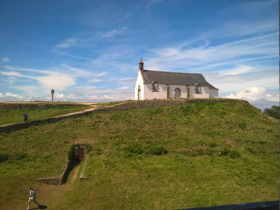

This major megalithic monument in southern Morbihan dominates the city of Carnac, on its summit stands today the chapel St Michel.
Built during the 5th millennium BC, excavations carried out at the end of the 19th century by René and Louis Galles, revealed a central vault in which some fragments of bones and coals were found as well as prestigious objects: jadeite axes and variscite ornaments. At the beginning of the twentieth century, Zacharie Le Rouzic undertook new research, which led to the discovery of small vaults peripheral to the central vault, as well as a corridor dolmen, added in a later phase in the eastern end of the tumulus. The architecture of the monument is elaborate: the funeral chambers are covered with a mound of rubble, itself covered by a layer of earth and stones, all sealed by a thick layer of hydromorphic silt, used to seal the internal funerary structures . The objects found during these excavations, axes, pearls, flint tools, are now preserved in the museums of Carnac and Polymathique in Vannes with its dimensions (125m long, 60m wide and 10m high), its architecture and the prestigious objects it housed, the tumulus St Michel is characteristic of the great tumuli of southern Morbihan.